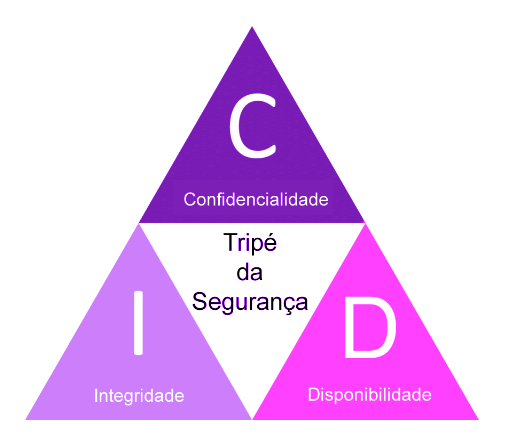

Aplicação dos Princípios de Integridade e Disponibilidade no Cotidiano
A segurança da informação é composta por diversos princípios fundamentais, entre eles a integridade e as disponibilidade, que não se restringem apenas no mundo digital. Esses conceitos também se aplicam no dia a dia. A integridade, se diz respeito a preservação de um objeto ou informação em seu estado original. Trazendo par ao mundo real podemos observar em obras de arte, um exemplo de integridade física seria uma pintura ou escultura mantida em boas condições, longe de danos ou alterações. A conservação dessas obras garante que seu valor artístico, histórico e simbólico permaneça intacto ao longo do tempo. Já a disponibilidade está relacionada ao acesso contínuo e funcional de um recurso sempre que necessário. O uso de uma agenda física, por exemplo. Ao registrar compromissos e horários, a agenda permite que a pessoa saiba quando está disponível, facilitando sua organização pessoal e cumprimento das tarefas. Esses exemplos demonstram que os princípios de segurança da informação vão além do universo tecnológico, estando presente no dia a dia das pessoas, isso mostra a importância da compreensão e aplicação desses conceitos.
Autenticar não é tudo: O que posso fazer em sistemas digitais
A segurança digital é feita de dois pilares fundamentais: autenticação e autorização. Parece até
coisa apenas técnica, mas é usada em situações do cotidiano tanto na internet quanto fora dela.
• Login e senha para acessar redes sociais ou meu e-mail;
• Autenticação em dois fatores, como receber códigos no celular ou e-mail;
• Impressão digital e reconhecimento facial no celular;
• Cartão com chip e senha para pagar compras;
• E até assinatura à mão para validar contratos ou acordos formais.
Mas ter apenas a autenticação não dá acesso total a tudo. E aí que entra a autorização, o que
tenho
(ou não tenho) permissão para fazer depois de provar minha identidade.
Por exemplo, no sistema da Metrópole Digital, eu não posso:
• Acessar contas bancárias de outras pessoas;
• Alterar minhas próprias notas no sistema da escola;
• Mudar o preço de produtos que estou tentando comprar online.
No sistema da NSA da Etec, também há várias limitações. Não tenho permissão para:
• Alterar faltas de outros alunos;
• Mudar notas ou acessar dados pessoais de colegas;
• Adicionar ou remover matérias do curso;
• Trocar minha própria foto de perfil.
Essas restrições existem por um motivo claro: proteger informações e evitar que qualquer pessoa faça
mudanças indevidas. Com isso, a segurança vai além de entrar no sistema ela também controla o que
cada um pode fazer dentro dele.
Certificado Digital
Para garantir segurança e autenticidade das transações online o certificado digital se tornou essência. Surge como uma ferramenta fundamental nesse cenário, funcionando como uma identidade eletrônica que assegura integridade e confidencialidade das informações trocadas no ambiente digital.
O que é um Certificado Digital?
O certificado digital é um documento eletrônico que utiliza criptografia para associar uma identidade a uma chave pública. Ele é emitido por uma Autoridade Certificadora (AC) confiável, que valida a identidade do titular. No Brasil, a Infraestrutura de Chaves Públicas Brasileira (ICP-Brasil) regulas a emissão desses certificados, garantindo sua validade jurídica.
Para que serve?
Com o certificado digital, é possível:
• Assinar documentos eletronicamente com validade jurídica, eliminando a necessidade de
reconhecimento de firma em cartório.
• Acessar sistemas governamentais, como o e-CAC da Receita Federal, para envio de declarações
fiscais e outros serviços.
• Emitir notas fiscais eletrônicas, essenciais para empresas que realizam vendas e prestação de
serviços.
• Realizar transações bancárias com maior segurança, protegendo contra fraudes e acessos não
autorizados.
• Participar de processos licitatórios e outras atividades que exigem comprovação de identidade no
meio digital.
Tipos de Certificado Digital
Existem diferentes tipos de certificados digitais, cada um adequado a uma necessidade específica:
• e-CPF: Destinado a pessoas físicas, permite assinar documentos e acessar serviços eletrônicos.
• e-CNPJ: Voltado para pessoas jurídicas, é utilizado para assinar documentos e realizar transações
em nome da empresa.
• NF-e: Específico para a emissão de notas fiscais eletrônicas.
• Certificados A1 e A3: Diferenciam-se pelo formato de armazenamento e validade. O A1 é um arquivo
digital com validade de um ano, enquanto o A3 é armazenado em um dispositivo físico, como um token
ou smart card, com validade de até cinco anos.